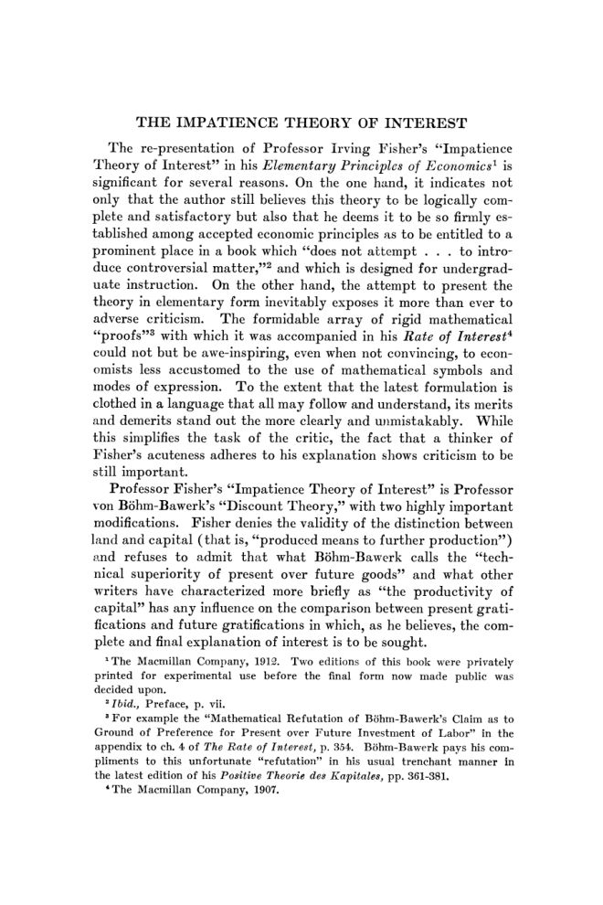

Seager, 1912: os juros nascem só da impaciência?
Leitura: 8 min
Seager responde à teoria dos juros de Irving Fisher: a impaciência explica a oferta de poupança, mas sem a produtividade do capital a explicação fica pela metade.


Em 1912, Irving Fisher publicou um manual para estudantes de graduação, Elementary Principles of Economics, que no prefácio dizia não pretender introduzir matéria controversa. Nele estava, em linguagem simples, a teoria dos juros que Fisher expusera em 1907 em The Rate of Interest, cercada de demonstrações matemáticas. Para Henry R. Seager, da Columbia University, a versão elementar tem um efeito duplo: mostra que Fisher considera a teoria assente e a expõe, mais do que nunca, à crítica.
O que diz a teoria da impaciência?
Seager a descreve como a teoria do desconto de Böhm-Bawerk com duas modificações importantes. Fisher nega a distinção entre terra e capital: capital é qualquer estoque de riqueza num dado instante, incluindo terra, bens de consumo duráveis e os próprios trabalhadores. E recusa que a superioridade técnica dos bens presentes sobre os futuros, ou a produtividade do capital, influa na comparação entre satisfações presentes e futuras.
Para Fisher, “a essência dos juros é a impaciência, o desejo de obter satisfações mais cedo do que podemos obtê-las”. (“the essence of interest is impatience, the desire to obtain gratifications earlier than we can get them”)
A taxa de impaciência varia com traços pessoais, previdência, autocontrole, hábito, expectativa de vida e amor à descendência, e com as características da renda esperada: tamanho, distribuição no tempo e certeza. Pessoas imprevidentes, de vontade fraca, acostumadas a gastar, com pouco tempo de vida e sem herdeiros têm taxas altas; as previdentes têm taxas baixas. A combinação dessas taxas, por meio de empréstimos e investimentos, forma a taxa de juros.
Seager lembra que quase todos esses fatores já eram conhecidos. No seu próprio Introduction to Economics, listara oito influências sobre a acumulação de capital, que cobriam os de Fisher, exceto o hábito e a distribuição da renda no tempo. O que distingue Fisher é o método e a recusa da produtividade.
De onde vêm as rendas?
A primeira crítica é que Fisher separa a explicação dos juros da explicação da produção. Lendo The Rate of Interest, diz Seager, se teria a impressão de que enriquecer é um processo puramente psicológico, como se as rendas brotassem das encostas como riachos de montanha. Böhm-Bawerk, ao reconhecer a superioridade técnica dos bens presentes, precisou explicar o papel do capital na produção, e sua teoria ficou próxima da teoria da produtividade. Fisher, ao negar essa superioridade, ficou livre para não dizer nada sobre a produção.
A impaciência é da natureza humana?
Fisher afirma que a preferência pelo presente é atributo fundamental da natureza humana e que os juros em dinheiro nunca podem ser negativos, porque a moeda pode ser entesourada sem perda. Seager responde que entesourar exige trabalho, despesa e risco, e que muitas pessoas bem providas pagariam algo para transferir riqueza supérflua do presente para o futuro. Se os juros quase nunca são negativos, é porque os homens de negócios, que conhecem a produtividade do capital, tomam emprestada a poupança alheia.
Para mostrá-lo, Seager propõe supor ausente a produtividade do capital. Haveria ainda gente imprevidente disposta a trocar renda futura por presente. Mas muitos pobres entesourariam para os dias difíceis, como os camponeses franceses que guardavam moedas sem juro nenhum, e muitos ricos poupariam para a velhice, para os filhos e pelo poder que a riqueza confere.
O ponto que Fisher deixaria de lado é o poder de endividamento. Na sua primeira aproximação, os impacientes tomam emprestado até que sua taxa de impaciência iguale a de juros. Seager pergunta se isso vale para um bebedor inveterado com renda pequena e certa, disposto a sacrificar tudo pela bebida e com poucos anos de vida: ele nunca conseguiria tomar emprestado o bastante. A maioria dos que têm taxas altas, acrescenta, são assalariados sem outra renda além do trabalho. Sem a produtividade, conclui, a existência de juros positivos seria uma questão em aberto.
O que há de errado nos exemplos de Fisher?
Fisher acusa os teóricos da produtividade de petição de princípio: a terra vale US$ 100.000 porque esse é o valor descontado de US$ 5.000 por ano, e descontar já supõe uma taxa de juros. Seager responde que o argumento só convence porque a terra, de oferta fixa, é apresentada como típica do capital. Basta trocar terra por ferramentas e máquinas: se o custo de produzi-las cair à metade, elas se multiplicarão até que o valor dos produtos se ajuste ao valor reduzido dos instrumentos. A relação entre o valor do capital e o de seus produtos é de dependência mútua.
Fisher vai além e sugere que dobrar a produtividade de todo o capital do mundo poderia até reduzir os juros, por mais que dobrar o valor do capital. Seager considera esse o exemplo mais claro dos efeitos de juntar terra e meios de produção produzidos num mesmo conceito: se o custo de produzir os instrumentos pouco mudasse, o retorno maior teria de aparecer como juros mais altos.
O que a teoria da produtividade afirma?
Seager resume a teoria que defende. Os empresários competem pelos fatores de produção e repassam a eles, descontados a remuneração da gestão e o fundo de reposição, o preço que recebem. Os bens de capital, em concorrência, tendem a custar o que custa produzi-los; quanto podem pagar de juros, os empresários estimam comparando os serviços do capital com os dos trabalhadores. Essa demanda por capital é a influência ativa sobre os juros, como a utilidade o é sobre o valor. A teoria não dispensa a análise psicológica da poupança, que determina os juros pelo lado da oferta.
A ideia de Fisher de que elevar a produtividade não eleva os juros lhe parece o inverso do certo: mudar os juros por outra via é como aumentar um rio por mudanças “no oceano em que ele deságua”. (“like the idea of increasing the volume of a stream by changes … in the ocean into which it flows”)
Seager encerra com uma observação. Entre as ilustrações históricas de Fisher estão os juros altos dos Estados Unidos em comparação com a Europa ocidental, e os da Califórnia entre 1850 e 1870, depois da descoberta do ouro, que Fisher atribui a rendas em expansão. Rendas em expansão, pergunta Seager, não significam justamente capital muito produtivo? Ele reconhece, por fim, o serviço que Fisher prestou ao submeter as teorias correntes a uma análise rigorosa, e conclui que sua explicação, por partir de um conceito de capital que confunde terra e meios produzidos, é unilateral.
Na minha leitura
Na minha leitura, o centro do debate é uma questão de conceito, não de psicologia. Seager não nega que a preferência temporal existe; nega que ela baste, e localiza o problema na decisão de Fisher de tratar terra e máquinas como a mesma coisa. Para um bem de oferta fixa, o valor é de fato o rendimento descontado; para um bem reproduzível, o custo de produção ancora o valor, e a produtividade passa a determinar o retorno.
O exemplo do bebedor também tem alcance econômico: a teoria da impaciência, na versão de Fisher, supõe mercados de crédito em que qualquer um pode tomar emprestado contra a renda futura. Seager mostra que a restrição de crédito dos mais pobres muda o resultado, porque quem mais quer gastar hoje é quem menos consegue pedir emprestado. É uma observação sobre restrições de liquidez que continua relevante para entender poupança, consumo e juros.
Glossário
- Taxa de impaciência
- grau de preferência de uma pessoa por bens presentes sobre bens futuros, na teoria de Fisher.
- Teoria do desconto
- explicação de Böhm-Bawerk dos juros pelo desconto que se aplica aos bens futuros.
- Superioridade técnica dos bens presentes
- tese de Böhm-Bawerk de que métodos indiretos de produção rendem mais com o tempo.
- Teoria da produtividade
- explicação dos juros pela contribuição do capital à produção.
- Juros negativos
- situação em que o credor paga para emprestar, devolvendo-se menos do que se recebeu.
- Poder de endividamento
- capacidade de tomar empréstimos, limitada pela renda futura e pelas garantias do devedor.
Fontes
- The Impatience Theory of Interest — Henry R. Seager (Columbia University) (pp. 834–851). JSTOR · Internet Archive (PDF)
- Edição completa, com os demais artigos: Nº 121 do Arquivo.
Documento em domínio público (EUA, publicado antes de 1931), via JSTOR Early Journal Content e Internet Archive. Resumo e comentário do autor deste site, sem afiliação com a American Economic Association. Encontrou um erro? Escreva: a correção é publicada no próprio texto, com data.
← Fetter, 1912: o que é, afinal, um preço? ↑ Nº 121 · Dezembro de 1912: o que é preço, de onde vêm os juros